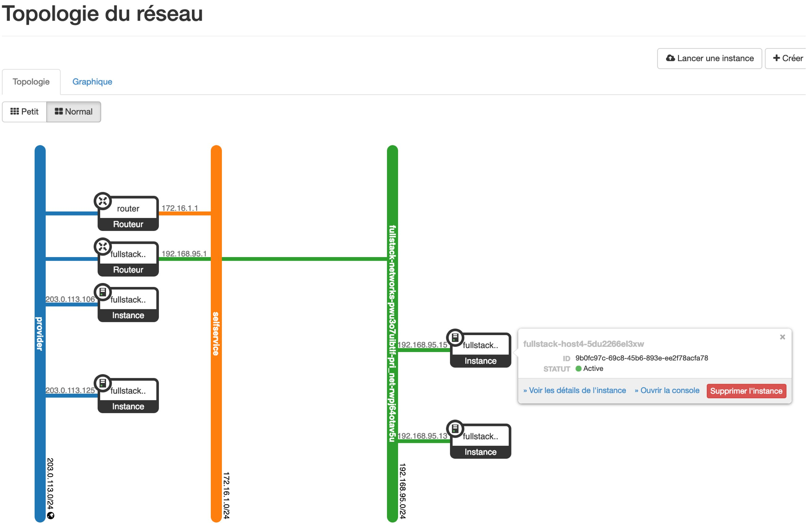

SAÉ 2.01 • Cloud & Infrastructure
Services
Services
Cloud & Monitoring
Environnement
OpenStack
Technos
Rocky Linux • DNS • FTP
Supervision
Prometheus • Grafana
Architecture Déployée
Déploiement complet d'une infrastructure multiniveaux sur la plateforme Cloud OpenStack. Ce projet a nécessité la configuration fine de routeurs, d'instances Windows et Linux, et la mise à disposition de services critiques pour une structure simulée.
Topologie réseau extraite du dashboard OpenStack.
Services Web
Gestion du serveur Apache, déploiement de Nextcloud et configuration des zones DNS autoritaires.
Supervision
Mise en place de dashboards Grafana pour monitorer en temps réel la charge CPU et RAM des instances.
Points Clés
- • Instances Rocky Linux
- • Routage GW0 / GW1 / GW2
- • Groupes de sécurité Firewall
- • Automatisation DNS